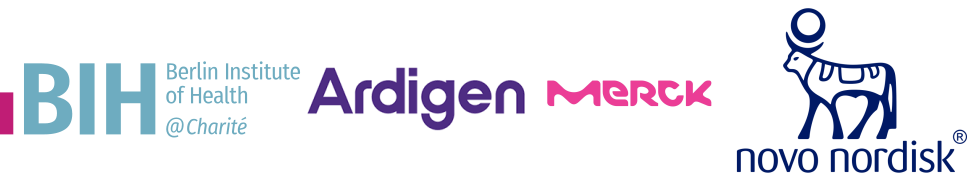

Katarzyna Wreczycka
B.Sc. & M.Sc. in Computer Science & Bioinformatics @MIMUW
Ph.D. in Computational Biology @MDC-BIMSB
Data scientist with 9+ years of experience in machine learning, software development, and biomedical research. Here, I share insights from my research and industry projects in data analysis, tool development and disease (epi)genomics. This is my personal website.
Explore my project portfolio and selected code samples.
Experience
Consultancy for Pharmaceutical Companies, Start-ups, and Consulting Firms
Freelance in Bioinformatics and Data Science
February 2023 – Now
ETH Zürich & Functional Genomics Center Zürich
Bioinformatician | Scientific Assistant II
April 2025 – July 2025
Bioinformatics and Omics Data Science Platform at MDC-BIMSB
PhD Student (PhD thesis, PDF)
September 2015 – November 2021
Institute of Computer Science, Polish Academy of Sciences & MDC BIMSB
Visiting Predoctoral Researcher
March 2015 - August 2015
Selected publications
Peer-reviewed articles (380+ citations):
- Strategies for analyzing bisulfite sequencing data. Journal of Biotechnology, 261, 105-115, 2017
- PiGx: reproducible genomics analysis pipelines with GNU Guix. GigaScience, 7(12), giy123, 2018
- HOT or not: Examining the basis of high-occupancy target regions. Nucleic Acids Research, 47(11), 5735–5745, 2019
- Cardiovascular disease biomarkers derived from circulating cell-free DNA methylation. NAR Genomics and Bioinformatics, 5(2), lqad061, 2023
Freelance
I have been freelancing as a bioinformatician and data scientist since 2023. Some of my high profile clients include:

For collaboration inquiries, reach out via email at katwre [at] gmail.com.